Příkazy používáme k provádění operací, které mají vedlejší účinky. Stejně jako sdělení (messages), jsou příkazy rovněž reprezentovány jako data. Můžete si je představit jako datové struktury, které spolu s potřebnými daty ukládájí, co se má stát. Příkaz potom předáváme runtime Elmu. Runtime provede potřebné a zpraví naši aplikaci o výsledku. Věru, zní to poněkud vágně. Lépe si to ukážeme na příkladu, který generuje náhodná čísla.
Generování náhodných čísel
Ke generování náhodných čísel existují dva přístupy: True Random Number Generators (TRNGs) a Pseudo-Random Number Generators (PRNGs). TRNGs generuje čísla ze skutečně náhodného fyzikálního fenoménu, jakým jsou například malé variace v pohybech něčí myši nebo časový okamžik, ve kterém se rozpadá radioaktivní materiál nebo atmosférický hluk, zachycený radiem.
Vzhledem ke své závislosti na fyzikálním fenoménu potřebuje TRNG mnohem více času ke generování náhodných čísel. Proto většina počítačových programů, které potřebují náhodná čísla rychle, vychází z PRNG, které je rychlejší. Přes tuto svoji pružnost nejsou PRNG vhodné pro aplikace, které potřebují skutečně nepředvídatelná náhodná čísla - jako jsou generátory šifrovacích klíčů.
PRNG používají počáteční hodnotu (zvanou seed), na níž aplikují algoritmus pro generování zdánlivě náhodných čísel. Moderní algoritmy, používané PRNG jsou tak dobré, že generovaná čísla vypadají jako zcela náhodná.
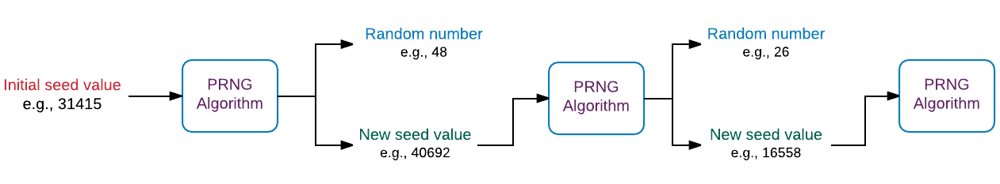
Ovšem, použijeme-li tentýž počáteční seed vícekrát za sebou, dostaneme pokaždé přesně stejná čísla.
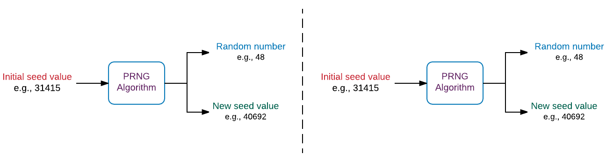
Generování náhodných čísel bez vedlejších účinků
Prozkoumejme toto chování PRNG podrobněji krátkým kódem v elm-repl. Začneme generováním počátečního seedu.
> import Random
> seed0 = Random.initialSeed 31415
Seed { state = State 31416 1, next = <function>, split = <function>, range = <function> }
: Random.SeedFunkce initialSeed z modulu Random přijímá celé číslo a vrací seed. Náhodně jsme jako vstup vybrali číslo 31415. Signatura typu funkce initialSeed vypadá takto:
initialSeed : Int -> SeedTyp Seed je v modulu Random definová takto:
type Seed
= Seed
{ state : State
, next : State -> ( Int, State )
, split : State -> ( State, State )
, range : State -> ( Int, Int )
}
type State
= State Int IntTakto složitý sdružený (union) typ jsme dosud neměli. Typ Seed používá stejné jméno pro typový i datový konstruktor, což je v Elmu zcela přípustné. Chceme-li vytvořit seed přímo bez použití funkce initialSeed, potřebujeme zadat záznam, který obsahuje hodnoty pro vlastnosti state, next, split a range. Takovéto vytváření nového seedu je docela složité. Proto modul Random poskytuje funkci initialSeed, která před námi veškeré složitosti ukrývá.
Dobrou zprávou je, že nemusíme vytvářet seed přímo bez funkce initialSeed nebo rozumět tomu, jak typ Seed pracuje, abychom byli schopni generovat náhodná čísla v Elmu. Nicméně jsem se chtěl tady o tom krátce zmínit, aby vám výstup, generovaný funkcí initialSeed dával smysl.
Seed
{ state = State 31416 1
, next = <function>
, split = <function>
, range = <function>
} : Random.SeedNyní, když máme počáteční seed, můžeme použít funkci Random.step ke generování náhodné hodnoty.
> Random.step (Random.int 0 100) seed0Výstup z tohoto výrazu se těžko čte. Takto ale vypadá po menším formátování:
( 48,
Seed
{ state = State 1257079824 40692
, next = <function>
, split = <function>
, range = <function>
}
) : ( Int, Random.Seed )Výše uvedený výstup je entice. První element je náhodné číslo a druhý element je seed, který můžeme použít ke generování dalšího náhodného čísla. Jak již dříve zmíněno, potřebujeme funkci step zadat jiný seed pokaždé, když chceme generovat nové náhodné číslo. Jinak bychom dostávali stále stejné číslo. Proto funkce step vrací s náhodným číslem i nový seed.
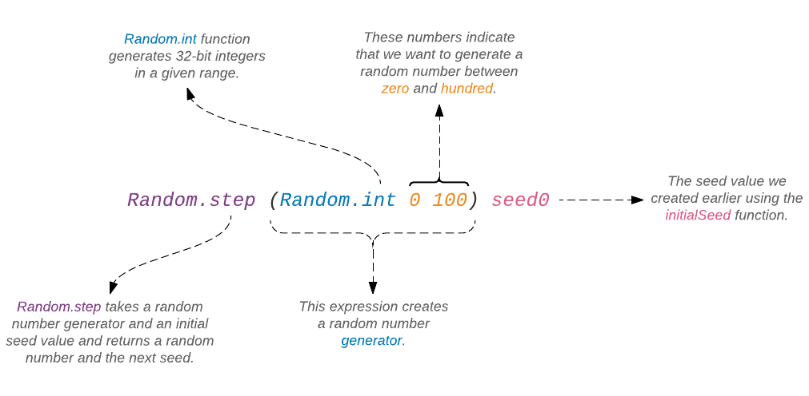
Funkce step přijímá jako vstup generátor náhodného čísla a seed. Takto vypadá její signatura typu:
step : Generator a -> Seed -> (a, Seed)Výraz Random.int 0 100, který jsme zadali do replu, vytváří generátor, který produkuje náhodná čísla 32-bitová celá čísla mezi 0 a 100.
> Random.int 0 100
Generator <function> : Random.Generator IntJe důležité si uvědomit, že samotná fukce Random.int negeneruje náhodné číslo. Vrací generátor, který může být zadán jiné funkci, jako je step, která teprve požádá tento generátor aby produkoval náhodná čísla. Nazírejte na generátor jako na předpis pro generování určitých typů náhodných čísel. Takto výraz Random.int 0 100 popisuje jak vytvořit předpis pro generování celých čísel mezi 0 a 100. Podobně, výraz Random.float 0 1 předepisuje jak vytvořit předpis pro generování desetinných náhodných čísel mezi 0 a 1.
V dalším kroku podchytíme nový seed, vrácený funkcí step, abychom jej mohli použít ke generování jiného náhodného čísla.
> result = Random.step (Random.int 0 100) seed0
(48,Seed { state = State 1257079824 40692, next = <function>, split = <function>, range = <function> })
: ( Int, Random.Seed )
> randomNumber = Tuple.first result
48 : Int
> newSeed = Tuple.second result
Seed { state = State 1257079824 40692, next = <function>, split = <function>, range = <function> }
: Random.SeedNyní jsme připraveni generovat nové náhodné číslo.
> Random.step (Random.int 0 100) newSeedZde je výstup po jistém formátování:
( 26,
Seed
{ state = State 284581387 1655838864
, next = <function>
, split = <function>
, range = <function>
}
) : ( Int, Random.Seed )Tentokrát jsme dostali 26 jako nové číslo. Předtím to bylo 48. Čísla uvnitř vlastnosti state se také změnila. Kdyby se neměnila, dostávali bychom znovu a znovu stejné číslo. Z toho plyne, že Random.step je čistá funkce a nevytváří žádné vedlejší účinky. Pro tentýž vstup vždy vrací stejný výstup.
Generování náhodných čísel s vedlejšími účinky
Postup s ručním zadáváním počátečních hodnot má tu nevýhodu, že činí posloupnost náhodných čísel předvídatelnou. Elm nabízí způsob, jímž se lze této nevýhody zbavit volbou nepředvídatelné počáteční hodnoty. Činí tak s použitím reálného času, generovaného počítačem pro vytvoření hodnoty seed.
Jakmile však předáme Elmu zodpovědnost za výběr počáteční hodnoty, vytváří generování náhodného čísla vedlejší účinky. Pro získání počáteční hodnoty musí komunikovat s reálným časem počítače, což je součást reálného světa. To je chvíle, kdy přicházejí ke slovu příkazy.
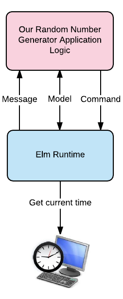
Abychom generovali náhodná čísla s vedlejšími účinky, musíme využít Elm Architecture. Napsat plně vybavený program v replu je obtížné, proto vytvoříme nový soubor RandomNumber.elm v adresáři beginning-elm/elm-examples.
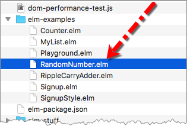
Model
První věc, kterou potřebujeme definovat, je náš model. Přidejte následující kód so souboru RandomNumber.elm.
module RandomNumber exposing (..)
type alias Model =
IntVše, co zde potřebujeme sledovat, je číslo. Výše uvedený model vypadá stejně jako ten, který jsme definovali pro aplikaci počítadla v sekci Skladba EA - část 1. Dále potřebujeme vytvořit počáteční model. Přidejte následující kód na spodek souboru RandomNumber.elm.
init : ( Model, Cmd msg )
init =
( 0, Cmd.none )Jsou-li zahtnuty příkazy 'comnands', stává se kód pro inicializaci našeho modelu poněkud složitější. Vše co jsme v aplikaci "counter" museli udělat, bylo vrátit celé číslo, jak ukázáno níže.
initialModel : Model
initialModel =
0Projděme si změnu za zněmou.
Změna #1: Název funkce se změnil z initialModel na init, protože provádíme víc, než pouhou inicializaci modelu.
Změna #2: Funkce init nyní vrací entici. První element reprezentuje model a druhý element reprezentuje příkazy. Kromě poskytnutí počáteční hodnoty našemu modelu, potřebujeme runtime Elmu říci, které příkazy má spustit při načtení naší aplikace. Protože na začátku nechceme spustit žádné příkazy, vracíme jednoduše Cmd.none. Typ Cmd je definován v modulu Platform.Cmd a reprezentuje příkazy v Elmu. Entita none je konstanta, rovněž definovaná v modulu Platform.Cmd. Vrazí prázdný seznam příkazů.
Řekněme, že chceme obnovit stav naší aplikace při jejím spuštění. Stav předchozího spuštění mohl být uložen v lokálním uložišti nebo na vzdáleném serveru. Obě tato uložiště leží mimo hranice naší aplikace. Proto se musíme spolehnout na runtime Elmu, že si potřebnou hodnotu stavu vyzvedne vrácením příkazu z funkce init.
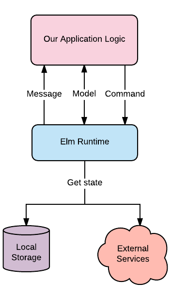
Změna #3: Anotace typu se také změnila na init : ( Model, Cmd msg ). Již víme, co to Model je. Evokace Cmd msg je příkaz, který seznámí naši aplikaci s výsledky zasláním sdělení typu msg. Označení msg je pouze proměnná typu, takže nepředstavuje konkretní typ. Později v této sekci budeme definovat typ, zvaný Msg aby bylo zřjemé, které sdělení má být posláno naši aplikaci.
View
Dále potřebujeme prezentovat náš počáteční model uživateli. Přidejte následující kód na spodek souboru RandomNumber.elm.
view : Model -> Html msg
view model =
div []
[ button [] [ text "Generate Random Number" ]
, text (toString model)
]Naše zobrazení (view) je velmi prosté. Vše, co zjevujeme, je tlačítko a řetězcová prezentace náhodného čísla. Potřebujeme také importovat modul Html v souboru RandomNumber.elm.
module RandomNumber exposing (..)
import Html exposing (..)
.
.Vstupní bod aplikace
Abychom mohli zobrazit view, potřebujeme pro naši aplikace definovat vstupní bod. Přidejte následující kód na spodek souboru RandomNumber.elm.
main : Program Never Model msg
main =
program
{ init = init
, view = view
, update = update
, subscriptions = (\_ -> Sub.none)
}Se zavedením příkazů se funkce main stala také lehce složitější. Takto funkce main vypadala v aplikaci počítadla:
main : Program Never Model msg
main =
beginnerProgram
{ model = initialModel
, view = view
, update = update
}Nyní používáme funkci program, definovanou v modulu Html, místo v modulu beginnerProgram abychom všechno propojili. Funkce program přijímá záznam se čtyřmi vlastnostmi. Jsme již obeznámeni s funkcemi view a update. Vlastnost init reprezentuje počáteční model a seznam příkazů, které mají být spuštěny při spuštění aplikace.
Subskripce reprezentuje věci, kterým chceme naslouchat, například sdělení webového soketu a změny lokace. Přiřazením (\_ -> Sub.none) dáváme runtime Elmu na vědomí, že nás žádné naslouchání aktuálně nezajímá.
Subskripce probereme podrobně později v této kapitole.
Jediná věc, kterou zbývá definovat, je funkce update. Přidejte následující kód hned nad funkci main v souboru RandomNumber.elm.
update : msg -> Model -> ( Model, Cmd msg )
update msg model =
init
main =
...Funkce update jednoduše vrací výstup z funkce init. Poněkud ji rozšíříme do větší významnosti. Konečně jsme připraveni zobrazit naše view. Spusťte elm-reactor z adresáře beginning-elm v terminálu a přejděte na stránku http://localhost:8000/elm-examples/RandomNumber.elm. Měl byste vidět "view", které (v počítači Mac) vypadá takto:
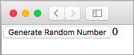
Update
Právě nyní nevykonává tlačítko Generate Random Number žádnou aktivitu. Definujme sdělení, které bude spuštěno při stisku tlačítka. Přidejte následující definici typu hned nad funkci update v souboru RandomNumber.elm.
type Msg
= GenerateRandomNumber
update =
...Dále potřebujeme upravit funkci update, aby mohla reagovat na sdělení GenerateRandomNumber.
update : Msg -> Model -> ( Model, Cmd Msg )
update msg model =
case msg of
GenerateRandomNumber ->
( model, Random.generate NewRandomNumber (Random.int 0 100) )Anotace typu pro funkci update nyní používá typ Msg místo proměnné msg, takže nezapomeňte provést i tuto změnu. Pokud už nevíte, jaký je rozdíl mezi proměnnou typumsg a sdruženým (union) typem Msg měl byste si opět přečíst odstavec Update sekce "Skladba EA - část 1".
Funkce update nyní vrací entici, obsahující model a příkazy místo pouhého modelu. Všimněte si, že funkce update a init (nebo initialModel v předchozích sekcích) mají tendenci mít stejné typy výstupů. Zde je pro srovnání funkce update z aplikace počítadla:
update : Msg -> Model -> Model
update msg model =
case msg of
Increment ->
model + 1
Decrement ->
model - 1Zkusme rozumět tomu, co se děje v těle nové funkce update. Po přijetí sdělení GenerateRandomNumber vracíme nezměněný model a příkaz pro generování náhodného čísla. Příkaz je generován s použitím funkce generate, definované v modulu Random.
V Elmu se nesnažíme vytvářet příkazy přímo prostřednictvím konstruktorových funkcí. Místo toho se spoléháme na funkce jako generate. Zde je další příklad: řekněme, že chceme vytvořit příkaz, který posílá HTML požadavek na vzdálený server. Můžeme pro generování tohoto příkazu použít funkci Http.send
. Pouze vyhledáme v modulu vhodnou funkci a použijeme ji k vytvoření příkazu.
Funkce generate se pokouší dosáhnout stejného cíle jako funkce step — generovat náhodné číslo. Způsob, kterým tohoto cíle dosahuje, je velmi odlišný. Funkce step používá generátor a seed zároveň.
> Random.step (Random.int 0 100) seed0Funkce generate na druhé straně, přijímá generátor a říká runtime Elmu aby ten generátor spustil. Také předává Elmu jméno sdělení, které by runtime mělo poslat, když je číslo hotové. Sdělení NewRandomNumber jsme dosud nedefinovali, učiníme tak záhy.
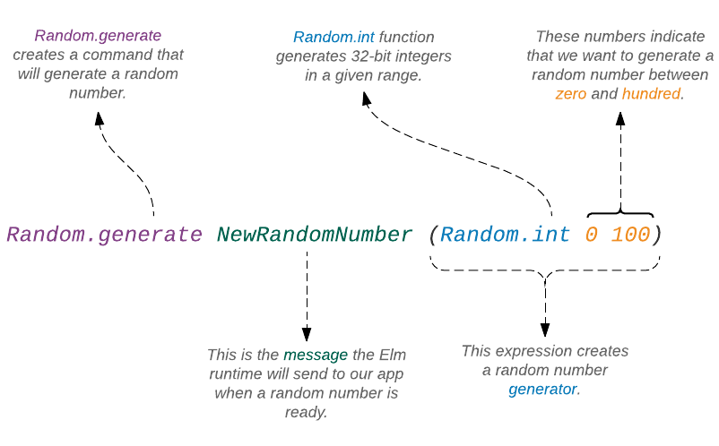
Proč musíme funkci generate poskytovat sdělení? Proč tato funkce nemůže vrátit náhodné číslo hned, stejně jako funkce step? Je to v důsledku toho, že již neposkytujeme počáteční hodnotu seedu. Seed musíme generovat s použitím hodin počítače, což produkuje vedlejší účinky.
Abychom mohli spouštět věci, které vytvářejí vedlejší účinky, Elm od nás požaduje, abychom vytvořili příkaz s patřičnou informací. Tento příkaz potom předáme runtime Elmu. Runtime provede příkaz a uvědomí naši aplikaci o výsledku zasláním sdělení, přiložené k příkazu.
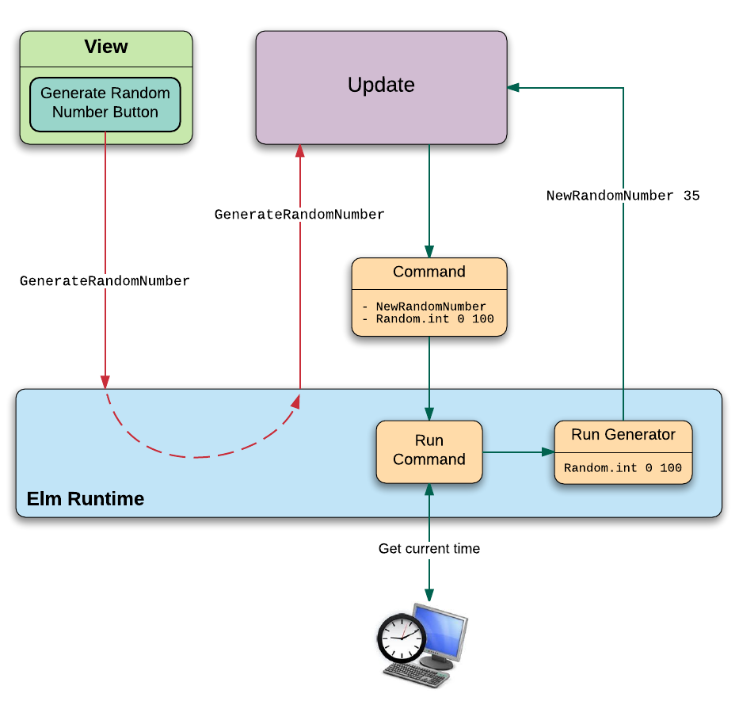
Takto vypadá signatura typu funkce generate:
generate : (a -> msg) -> Generator a -> Cmd msgPrvní argument je funkce, která přijímá hodnotu a zabalí ji do sdělení. V našem případě to je NewRandomNumber. Vzpomeňte si, že sdělení, která přijímají argumenty, jsou vpodstatě funkce. Prověříte-li funkci NewRandomNumber v replu, uvidíte, že přijímá celé číslo a vrací sdělení typu Msg.
> type Msg = NewRandomNumber Int
> NewRandomNumber
<function> : Int -> Repl.MsgDruhým argumentem pro funkci generate je generátor náhodného čísla. V našem případě to je Random.int, která jako vstup příjímá rozsah (tj., 0 100). Posléze vrací funkce generate
příkaz, který zapouzdří sdělení a generátor. Dalším krokem je přidat funkci NewRandomNumber k typu Msg a ošetřit to ve funkci update, jak ukázáno níže.
type Msg
= GenerateRandomNumber
| NewRandomNumber Int
update : Msg -> Model -> ( Model, Cmd Msg )
update msg model =
case msg of
GenerateRandomNumber ->
( model, Random.generate NewRandomNumber (Random.int 0 100) )
NewRandomNumber number ->
( number, Cmd.none )Když je sdělení NewRandomNumber přijato, vrací se číslo v payloadu jako náš model spolu s prázdným seznamem příkazů. Rovněž jsme nahradili proměnnou msg typem Msg v anotaci funkce update. Dále provedeme import modulů Html.Events a Random a přidáme atribut onClick našemu tlačítku, aby bylo sdělení GenerateRandomNumber spuštěno při stisku tlačítka.
module RandomNumber exposing (..)
import Html exposing (..)
import Html.Events exposing (onClick)
import Random
.
.
view : Model -> Html Msg
view model =
div []
[ button [ onClick GenerateRandomNumber ]
[ text "Generate Random Number" ]
, text (toString model)
]Nezapomeňte zaměnit proměnnou msg za typ Msg v anotaci typu funkce view
. Tuto záměnu potřebujeme rovněž provést ve funkcích init a main.
init : ( Model, Cmd Msg )
init =
...
.
.
main : Program Never Model Msg
main =
...Nyní jsme připraveni otestovat náš program. Obnovte stránku na http://localhost:8000/elm-examples/RandomNumber.elm a měli byste nyní být schopni generovat náhodná čísla.
Summary
V této sekci jsme se naučili používat příkazy k provádění operací, které vytvářejí vedlejší účinky. Takto vypadá schematické znázornění Elm Architecture se zahrnutím příkazů:
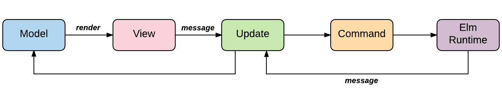
Interakce mezi runtime Elmu a naším kódem se také s použitím příkazů poněkud zkomplikovala. Sekvenční diagram dole tuto interakci zobrazuje.
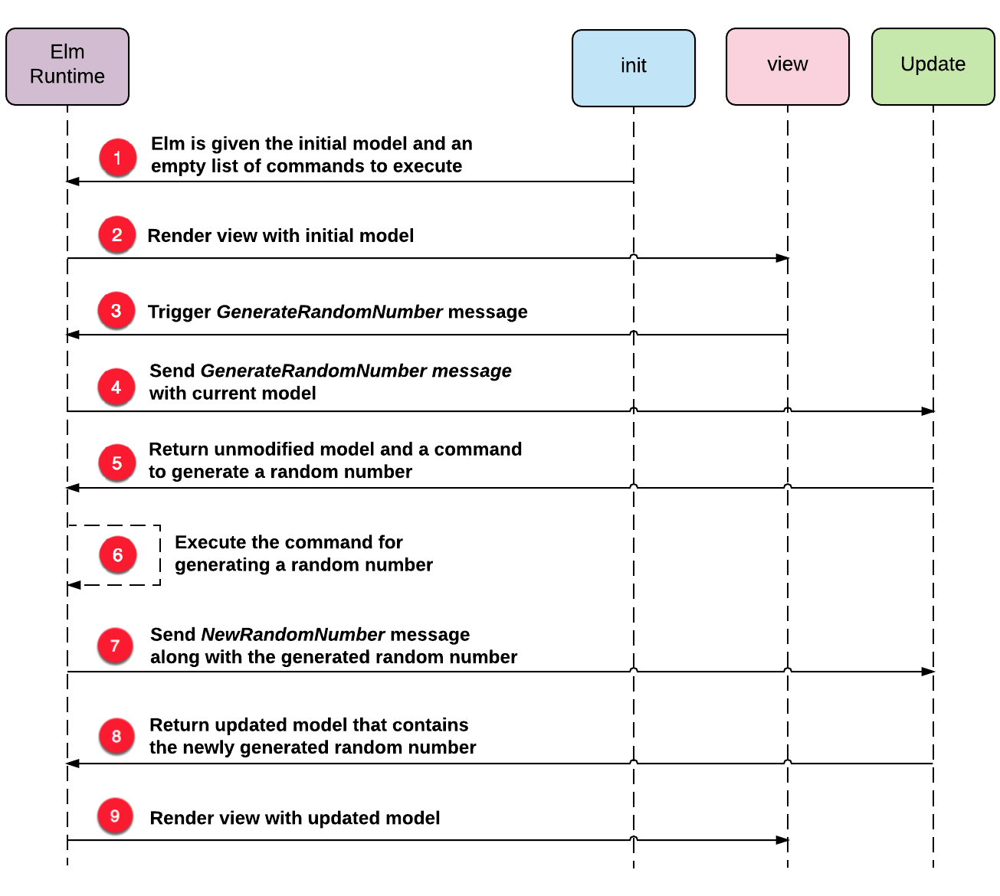
Příkazy jsou v Elmu důležitým konceptem. Potřebujeme jim dobře rozumět abychom byli schopni vytvářet komplexní aplikace v Elmu.
V následující sekci budeme pokračovat ve zkoumání, kterak nám mohou příkazy pomoci provádět tu nejobvyklejší operaci webových aplikací - posílání a příjímání dat ze vzdáleného serveru HTTP a to bez obětování čistoty naši aplikace.